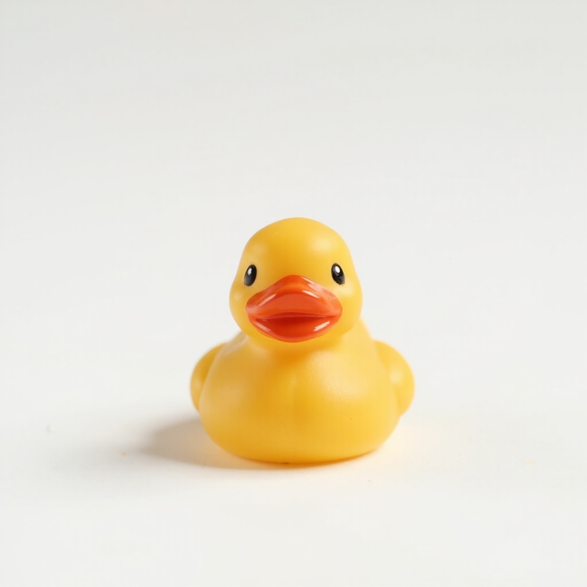
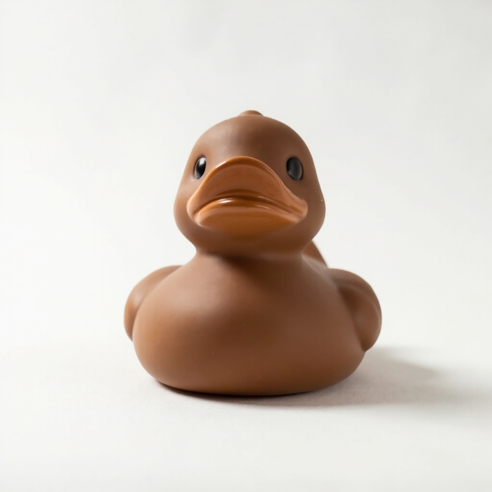
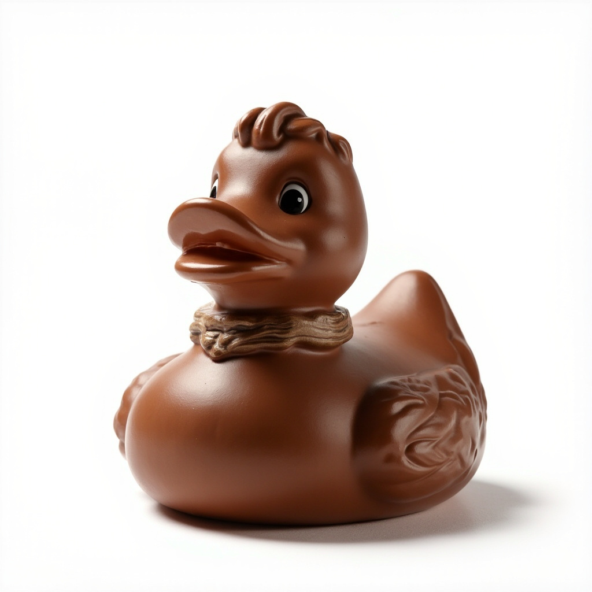
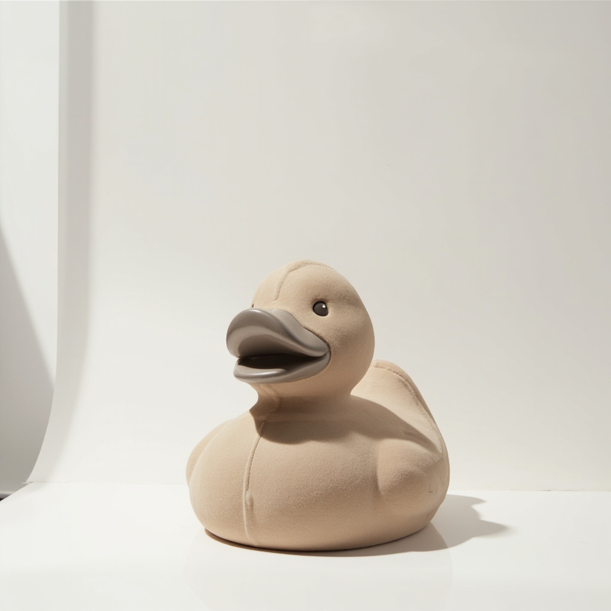

Service One
Micro · 4 cmQuacktory · Serenity · Vol. 01
Six forms, one silhouette. Each duck is finished in amber, walnut, bronze, taupe, and umber — colors borrowed from steam, river stones, and the undersides of eucalyptus leaves — then left to dry in a quiet room for forty-eight hours before it leaves the workshop.
Book your duckFeatured Forms

Service One
Micro · 4 cm
Service Two
Classic · 15 cm
Service Three
Designer · 20 cm
Service Four
Mega · 50 cmOur Values
Six sizes, the same duck. We do not stretch, deform, or "stylize" the body — only change the volume of clay it is cast from.
Amber, walnut, bronze, taupe, umber. Five colors, each borrowed from the rooms our ducks live in. No neon, no chrome, no exceptions.
We will never make more than four hundred pieces in a year. If a batch sells out, the next one waits until the kiln cools.
Our Journey to Serenity
Quacktory began in 2021 above a bathhouse in Tbilisi, where the steam kept the clay from drying too fast. We learned to glaze in dim light, to fire in slow cycles, and to leave a piece alone while it figured itself out. Three years later, the workshop has a skylight and the ducks still smell faintly of eucalyptus when you unbox them.
See the collectionThe Size Ladder
4 cm
3 m